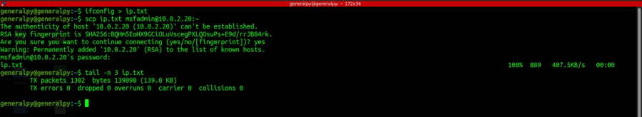
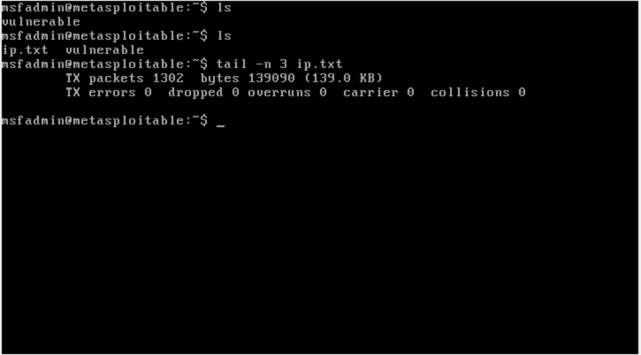
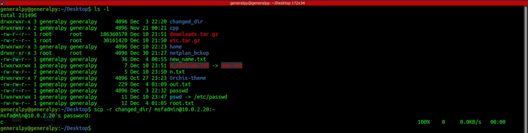
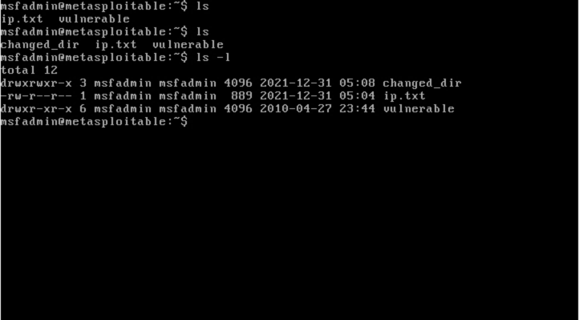
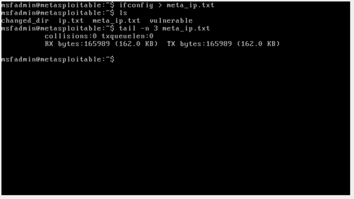
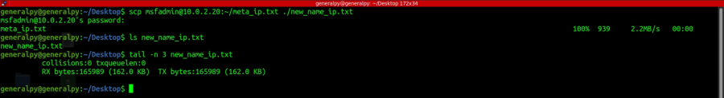

scp(secure copy) is a utility which uses ssh to copy files from remote server to local system, vice versa and from remote server to another remote server.
The users running and receiving files using scp must have valid permissions in their respective systems.
scp uses port 22 by default to perform copying.
Simple scp copy looks like(local to remote server) :
scp local_file_path user@host_address:path_in_host_system


Above command copies file ip.txt from ubuntu to metasploitable which is located at 10.0.2.20(at the time of running).
To use another port than 22 we can use -P flag followed by a port number.
To copy a directory, we must use -r flag with the scp command.


To preserve atime and mtime use -p flag.
Like simple copy, we can copy files remotely with a changed name too.
To copy files from remote server to local system, we just have to use a path available in remote server.


To copy files from server to server, we have to know users in both the systems.
scp user1@host1_address user2@host2_address There is another protocol available known as SFTP(SSH File Transfer Protocol) which also uses ssh but its has more functionalities like remote directory removal, directory listing etc. but in long run scp is faster than SFTP.
We can also transfer files between windows and linux by using GUI clients like Filezilla.